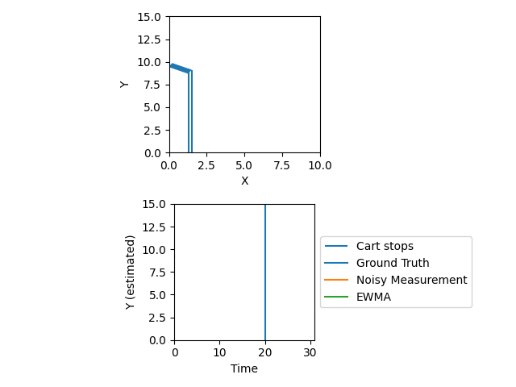
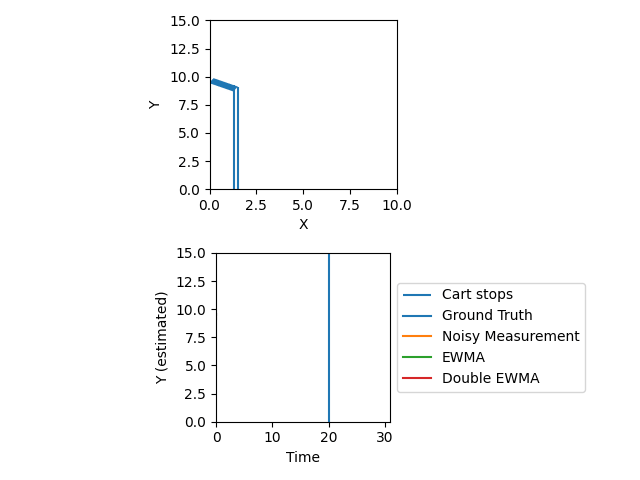

Let’s say you have some time-series data and you want to smooth it out and maybe run some prediction. You could design a FIR filter or something, but FIR filters involve a number of design decisions. What will your cutoff points be? What window size will you use? How will you handle data before your first full window? But, perhaps most importantly: if your data starts to move, how will you handle it? For example, let’s say we’re designing a robot to follow a wall at a certain distance, and controlling the steering angle $\theta$. In order to do this, you’re using a rangefinder to measure your current distance from the wall, but of course the data you get from it will be noisy, or you wouldn’t be smoothing it in the first place. If you start to drift towards the wall at a constant angle, your range data will start to exhibit a linear trend. If you’re expecting this, you have a couple of options if you decide to go the FIR filter route. If you’re being fancy, you could run a changepoint detection algorithm that triggers a linear fit being run on the data after the detected change, then subtract out the trendline, filter the residual, and add the trendline back in. But your pipeline has now become complicated, heavyweight, and arguably relies on too many magic numbers.
As a first approximation, you might just want to use an exponentially-weighted moving average. EWMA is easy to understand and sometimes it gets the job done without you having to do any extra work. But there’s a problem: like FIR, EWMA predictably lags trended data.

As a brief aside: in estimation generally, I like to use $x$ for the latent state of the thing we’re measuring, $y$ for the observations themselves, and $\hat{x}$ as the state estimation (hat = estimation).
However, there’s a variant of EWMA that works well for trended data: double EWMA. Double EWMA does not have the issue of lagging trended data, because it models data as following a linear curve and constantly tries to estimate the slope of that curve - using EWMA: $$\begin{align} \hat{x}_ i &= (1 - \alpha) y_ i + \alpha(\hat{x}_ {i-1} + \hat{\delta}) \\ \hat{\delta}_ i &= \beta \hat{\delta}_ {i-1} + (1 - \beta)(\hat{x}_ i - \hat{x}_ {i-1}) \end{align}$$
This looks more complicated than it is! Like normal EWMA, this has what I’ll call “credence parameters” $\alpha$ and $\beta$, which describe how much credence we give to our current model versus our one most recent observation. Everything with a hat is a model parameter - that’s what we’re estimating. Finally, $y_i$ is our observation (noisy measurement) at time $i$. The only difference is that we switched from modeling the data as a constant $y_ {i+k} = \hat{x}_ i$ to modeling as a linear equation: $y_ {i+k} = \hat{x}_ i + k\hat{\delta}_ i$, for all integers $k$. We update $\hat{\delta}$, the expected difference between two timesteps, every time we make a new estimate. This method does a much better job of identifying trended data!

Even when the robot stops moving and changes the rate at which it approaches the wall (to zero), the double EWMA converges to the steady-state estimate faster than the single EWMA.
So what’s triple EWMA then? I’ve seen the term used for a couple of different things, but in general: it’s EWMA with three parameters. The obvious example is to estimate a quadratic function (using a second difference), so I won’t do that. Instead, I’ll show how triple EWMAs can be used to estimate trended functions with periodic components!
With a periodic component, we expect that each value will be equal to the value one period ago - we’ll denote one period as $\tau$, so the value one period ago is $x_ i = x_ {i - \tau}$. With a (linear) trended periodic component, we expect that each value will be equal to the value one period ago plus $\tau \hat{\delta}$. I’ll leave a derivation for that for a later time.